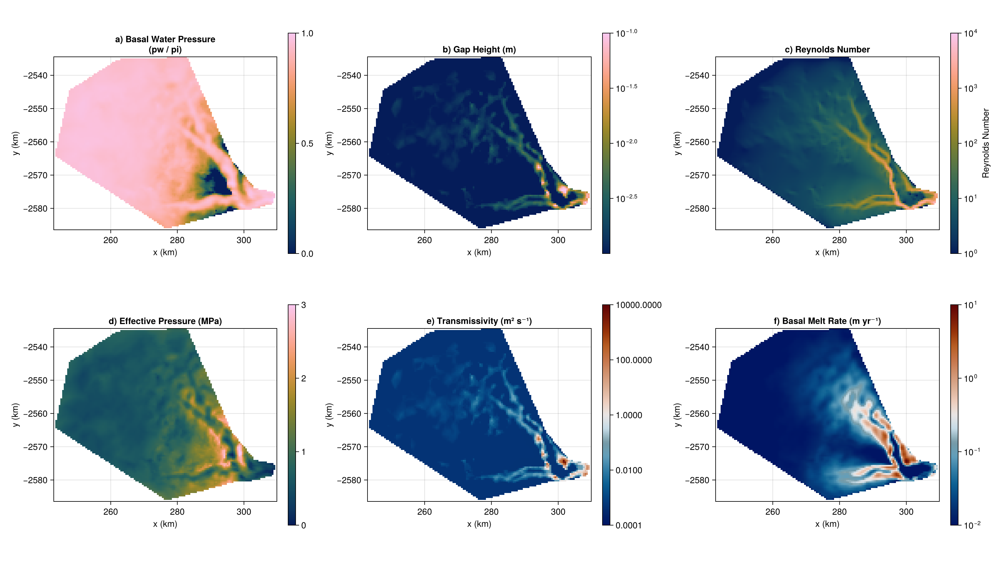

Helheim Glacier
Applies Shakti to real data: the winter subglacial hydrology of Helheim Glacier, Greenland, from Sommers and others (2023), doi:10.1017/jog.2023.39 (data: 10.5281/zenodo.7019805). Unlike a synthetic slab, this data arrives as native ISSM/SHAKTI output on an unstructured triangular mesh (6371 vertices, 12472 elements) – Shakti's Grid needs a regular grid, so the first step here is rasterizing the mesh onto one via barycentric interpolation, before building a State and time-stepping it to Sommers and others (2023)'s "winter base state" – reproducing the paper's Fig. 2.
using Shakti
using MAT
using CairoMakie
const DATADIR = joinpath(@__DIR__, "input", "Helheim")"/home/runner/work/Shakti.jl/Shakti.jl/docs/build/examples/input/Helheim"Loading the raw mesh
The .mat file is a saved ISSM model object (MATLAB classdef, not a plain struct) – MAT.jl reads it as a nested Dict-like structure, md.d["mesh"].d["x"] etc.
d = matread(joinpath(DATADIR, "Helheim_winter_A0_1d.mat"))
md = d["md"].d
mesh_s = md["mesh"].d
xs = vec(mesh_s["x"]) # per-vertex coordinates, meters, EPSG:3413
ys = vec(mesh_s["y"])
elements = Int.(mesh_s["elements"]) # (Ntri, 3), 1-based vertex indices
Nv, Ntri = Int(mesh_s["numberofvertices"]), Int(mesh_s["numberofelements"])
bed = vec(md["geometry"].d["bed"])
thickness = vec(md["geometry"].d["thickness"])
G_in = vec(md["basalforcings"].d["geothermalflux"])
vx = vec(md["initialization"].d["vx"]) # m/yr
vy = vec(md["initialization"].d["vy"])
B_visc = vec(md["materials"].d["rheology_B"]) # ice hardness, Pa s^(1/n)
friction_coefficient = vec(matread(joinpath(DATADIR, "friction_coefficient_Nfinal.mat"))["friction_coefficient"])
const GLEN_N = 3.0
A_visc_vertex = B_visc .^ (-GLEN_N) # Glen's law rate factor from ISSM's hardness: tau = B*edot^(1/n) <=> A = B^(-n)
println("Mesh: $Nv vertices, $Ntri elements")Mesh: 6371 vertices, 12472 elementsRasterizing onto a regular grid
For each triangle, walk only the grid cells within its bounding box and interpolate via barycentric coordinates – cheap (each triangle touches only a handful of cells at this resolution) and exact (matches ISSM's own piecewise-linear field representation, unlike nearest-neighbor interpolation).
const DX = 500.0 # meters, matching the mesh's own nominal edge length
x0, x1 = extrema(xs); y0, y1 = extrema(ys)
Nx = floor(Int, (x1 - x0) / DX) + 1
Ny = floor(Int, (y1 - y0) / DX) + 1
xc = [x0 + (i - 1) * DX for i in 1:Nx]
yc = [y0 + (j - 1) * DX for j in 1:Ny]
H, B, A, G, VX, VY, FRIC = (zeros(Nx, Ny) for _ in 1:7)
mask = fill(OTHER_BASIN, Nx, Ny) # default: outside the mesh -> no data, frozen
const EPS = 1e-9
for t in 1:Ntri
i1, i2, i3 = elements[t, 1], elements[t, 2], elements[t, 3]
x1v, y1v, x2v, y2v, x3v, y3v = xs[i1], ys[i1], xs[i2], ys[i2], xs[i3], ys[i3]
denom = (y2v - y3v) * (x1v - x3v) + (x3v - x2v) * (y1v - y3v)
abs(denom) < EPS && continue
i_lo = max(1, floor(Int, (min(x1v, x2v, x3v) - x0) / DX) + 1)
i_hi = min(Nx, ceil(Int, (max(x1v, x2v, x3v) - x0) / DX) + 1)
j_lo = max(1, floor(Int, (min(y1v, y2v, y3v) - y0) / DX) + 1)
j_hi = min(Ny, ceil(Int, (max(y1v, y2v, y3v) - y0) / DX) + 1)
for j in j_lo:j_hi, i in i_lo:i_hi
px, py = xc[i], yc[j]
w1 = ((y2v - y3v) * (px - x3v) + (x3v - x2v) * (py - y3v)) / denom
w2 = ((y3v - y1v) * (px - x3v) + (x1v - x3v) * (py - y3v)) / denom
w3 = 1 - w1 - w2
if w1 >= -EPS && w2 >= -EPS && w3 >= -EPS
H[i, j] = w1 * thickness[i1] + w2 * thickness[i2] + w3 * thickness[i3]
B[i, j] = w1 * bed[i1] + w2 * bed[i2] + w3 * bed[i3]
A[i, j] = w1 * A_visc_vertex[i1] + w2 * A_visc_vertex[i2] + w3 * A_visc_vertex[i3]
G[i, j] = w1 * G_in[i1] + w2 * G_in[i2] + w3 * G_in[i3]
VX[i, j] = w1 * vx[i1] + w2 * vx[i2] + w3 * vx[i3]
VY[i, j] = w1 * vy[i1] + w2 * vy[i2] + w3 * vy[i3]
FRIC[i, j] = w1 * friction_coefficient[i1] + w2 * friction_coefficient[i2] + w3 * friction_coefficient[i3]
mask[i, j] = GROUNDED
end
end
end
println("Rasterized onto a $(Nx) x $(Ny) grid; ", count(==(GROUNDED), mask), " GROUNDED cells")Rasterized onto a 134 x 104 grid; 8207 GROUNDED cellsThe terminus: an open drainage boundary
The original ISSM setup gives the terminus (a small polygon marking the outlet, terminus13.exp) a Dirichlet head=0 boundary – water can actually flow out there, unlike the rest of the domain edge (closed/zero-flux, OTHER_BASIN). We find the mesh's own boundary vertices inside that polygon (the same rule the original setup used), then reclassify nearby raster boundary cells as OCEAN (Shakti's open-drainage Dirichlet condition).
function read_exp_points(path)
lines = readlines(path)
header_idx = findfirst(l -> startswith(l, "# X pos"), lines)
pts = [parse.(Float64, split(l)) for l in lines[header_idx+1:end] if !isempty(strip(l))]
return [p[1] for p in pts], [p[2] for p in pts]
end
function point_in_polygon(px, py, poly_x, poly_y)
n = length(poly_x)
inside = false
j = n
for i in 1:n
xi, yi, xj, yj = poly_x[i], poly_y[i], poly_x[j], poly_y[j]
if ((yi > py) != (yj > py)) && (px < (xj - xi) * (py - yi) / (yj - yi) + xi)
inside = !inside
end
j = i
end
return inside
end
term_x, term_y = read_exp_points(joinpath(DATADIR, "terminus13.exp"))
vertex_on_boundary = vec(mesh_s["vertexonboundary"]) .> 0.5
terminus_idx = [v for v in 1:Nv if vertex_on_boundary[v] && point_in_polygon(xs[v], ys[v], term_x, term_y)]
const TERMINUS_BUFFER = 1.5 * DX
n_ocean = 0
for j in 1:Ny, i in 1:Nx
global n_ocean
mask[i, j] != GROUNDED && continue
is_boundary = (i == 1 || i == Nx || j == 1 || j == Ny) ||
mask[i-1, j] == OTHER_BASIN || mask[i+1, j] == OTHER_BASIN ||
mask[i, j-1] == OTHER_BASIN || mask[i, j+1] == OTHER_BASIN
if is_boundary && any(v -> hypot(xc[i] - xs[v], yc[j] - ys[v]) <= TERMINUS_BUFFER, terminus_idx)
mask[i, j] = OCEAN
n_ocean += 1
end
end
println("Terminus: reclassified $n_ocean boundary cells to OCEAN")Terminus: reclassified 8 boundary cells to OCEANBuilding the state
LinearSlidingLaw matches the paper's own basal stress formula, taub = C^2*N*u_b, using their inverted per-cell friction field. rho_i=917/omega=1e-3/br=0 match Table 2 exactly; ct=0 matches their text right after Eq. 7, which drops the sensible-heat term Table 2's ct/cw would otherwise imply – see NoSensibleHeat.
grid = Grid(Nx, Ny, (Nx - 1) * DX, (Ny - 1) * DX)
zb = B
gap = fill(1e-3, Nx, Ny)
zs = zb .+ H .+ gap
ieb = zeros(Nx, Ny)
const SECONDS_PER_YEAR = 365 * 86400.0
VX_ms, VY_ms = VX ./ SECONDS_PER_YEAR, VY ./ SECONDS_PER_YEAR
ub_x = zeros(Nx + 1, Ny)
ub_x[1, :] .= VX_ms[1, :]; ub_x[Nx+1, :] .= VX_ms[Nx, :]
ub_x[2:Nx, :] .= (VX_ms[1:Nx-1, :] .+ VX_ms[2:Nx, :]) ./ 2
ub_y = zeros(Nx, Ny + 1)
ub_y[:, 1] .= VY_ms[:, 1]; ub_y[:, Ny+1] .= VY_ms[:, Ny]
ub_y[:, 2:Ny] .= (VY_ms[:, 1:Ny-1] .+ VY_ms[:, 2:Ny]) ./ 2
taub_x, taub_y = zeros(Nx + 1, Ny), zeros(Nx, Ny + 1)
p = ModelParameters(rho_i = 917.0, omega = 1e-3, br = 0.0, lr = 2.0, ct = 0.0, b_min = 1e-3)
mi = ConstantMeltInput()
sl = LinearSlidingLaw(grid, FRIC)
state = State(grid)
set_initial_conditions!(state, grid, p, sl, mask, A, zb, zs, gap, G, ub_x, ub_y, ieb, taub_x, taub_y);Running to the winter base state
Sommers and others (2023) reach their "winter base state" (zero external meltwater input – channels drain only what the geothermal/frictional melt itself supplies) after about 90 days of time evolution; dt=1800 s, tsteps=4320 matches that exactly. Only the final state is kept (tracked_times = [tsteps]) since Fig. 2 only needs the converged snapshot.
ls = CholeskyDirectSolver(grid)
ps = PicardSolver(500, 1e-6, ls, grid)
dt, tsteps = 1800.0, 4320
sim = Simulation(grid, state, tsteps, floattype(dt), p, "implicit", ["h", "b", "N", "mdot", "pw", "po", "Re"], mi, sl;
ps = ps, which_observer = "Live", tracked_times = [tsteps])
run!(sim)
println("Ran $tsteps steps (dt=$dt s, $(tsteps * dt / 86400) days)")Ran 4320 steps (dt=1800.0 s, 90.0 days)Results
Reproduction of Fig. 2: (a) water pressure as a fraction of overburden, (b) gap height, (c) Reynolds number, (d) effective pressure, (e) transmissivity (K = b^3*g / (12*nu*(1+omega*Re))), (f) basal melt rate. Colors and colorbar limits are matched to the published Fig. 2: panels (a)-(d) use a sequential dark-blue-to-pink map, while (e) and (f) – both spanning many orders of magnitude either side of a "typical" value – use a diverging blue-white-red map instead.
const HELHEIM_CMAP = cgrad([
"#051c59", "#0d345f", "#114461", "#185361", "#236160", "#366956",
"#4d734d", "#667a3e", "#808131", "#9c892b", "#bb8f34", "#d79348",
"#ed9a64", "#faa489", "#fcb1ac", "#fbbccd", "#fac8f1",
])
const HELHEIM_DIVERGING_CMAP = cgrad([
"#001564", "#042b6e", "#054583", "#0d6193", "#327ea6", "#629fbb",
"#769ba7", "#c5dbe6", "#eae6e5", "#edccbb", "#dcae94", "#d19370",
"#c67549", "#b75e24", "#98350a", "#7a1a07", "#5f0306",
])
hist = sim.observer.history
final(name) = view(hist[name], :, :, 1)
b, N, pw, po, Re, mdot = final("b"), final("N"), final("pw"), final("po"), final("Re"), final("mdot")
K = b .^ 3 .* p.g ./ (12 .* p.nu .* (1 .+ p.omega .* Re))
pw_frac = pw ./ po
mdot_myr = max.(mdot ./ p.rho_w .* SECONDS_PER_YEAR, 1e-6) # kg/m^2/s -> m/yr w.e.; floor avoids log10 of the handful of refreezing (mdot<0) GROUNDED cells
xc_km, yc_km = xc ./ 1000, yc ./ 1000
grounded = mask .== GROUNDED
mask_nan(field) = ifelse.(grounded, field, NaN)
fig = Figure(size = (1600, 900))
function panel!(pos, title, field; colorrange, colorscale = identity, colormap = HELHEIM_CMAP, cb_label = "", cb_ticks = Makie.automatic)
ax = Axis(fig[pos...]; title = title, xlabel = "x (km)", ylabel = "y (km)", aspect = DataAspect())
hm = heatmap!(ax, xc_km, yc_km, mask_nan(field), colormap = colormap, colorscale = colorscale, colorrange = colorrange, nan_color = :transparent)
Colorbar(fig[pos[1], pos[2]+1], hm, label = cb_label, ticks = cb_ticks)
return ax, hm
end
panel!((1, 1), "a) Basal Water Pressure\n(pw / pi)", pw_frac; colorrange = (0, 1))
panel!((1, 3), "b) Gap Height (m)", b; colorrange = (1e-3, 1e-1), colorscale = log10)
panel!((1, 5), "c) Reynolds Number", Re; colorrange = (1, 1e4), colorscale = log10, cb_label = "Reynolds Number")
panel!((2, 1), "d) Effective Pressure (MPa)", N ./ 1e6; colorrange = (0, 3))(Makie.Axis (1 plots), Makie.Heatmap{Tuple{Vector{Float64}, Vector{Float64}, Matrix{Float32}}})8-decade colorrange: Makie's automatic log ticks pick an odd 2.5-decade spacing here (unlike the narrower ranges above) – explicit ticks give the same clean 2-decade spacing as the published Fig. 2e.
panel!((2, 3), "e) Transmissivity (m² s⁻¹)", K; colorrange = (1e-4, 1e4), colorscale = log10, colormap = HELHEIM_DIVERGING_CMAP, cb_ticks = [1e-4, 1e-2, 1e0, 1e2, 1e4])
panel!((2, 5), "f) Basal Melt Rate (m yr⁻¹)", mdot_myr; colorrange = (1e-2, 1e1), colorscale = log10, colormap = HELHEIM_DIVERGING_CMAP)
fig